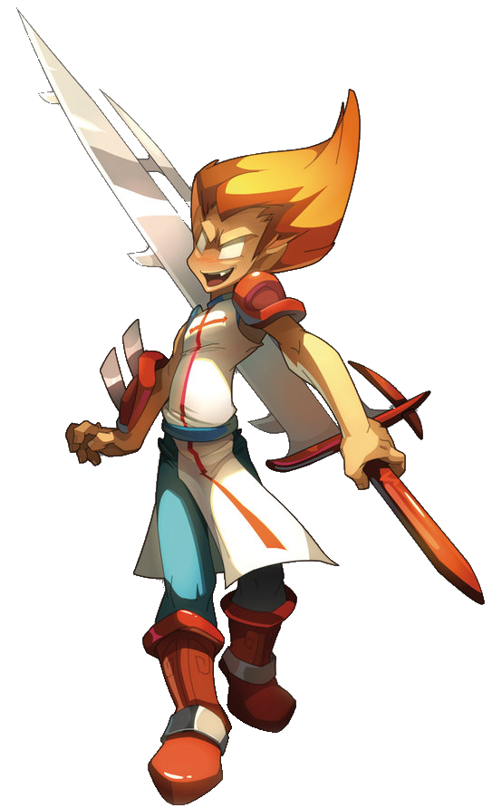
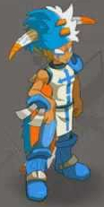
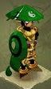
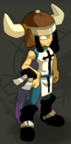

IOP
- Âge : 20 ans
- Poids : 75 kg
- Sexe : homme
- Arme : épé
Les Iops sont des guerriers fonceurs et sans reproche ! Une chose est sûre : les Iops savent faire parler les
armes. D'ailleurs, se retrouver pris dans une bagarre au moins une fois par jour est pour eux un signe de
bonne santé.
Leur tempérament impétueux fait des Iops des paladins de l'extrême, capables du meilleur... comme du pire !
Les différents types de IOPS :
Feu :

Air :

Terre :

Attaque préférée : colère de iop !